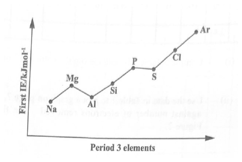

Step-by-step worked solutions for the structured-response paper. Three compulsory questions covering all three modules. Free, mobile-friendly, no signup.
Paper 2 (Structured)Q1 — Module 1: FundamentalsQ2 — Module 2: Kinetics & EquilibriaQ3 — Module 3: Chemistry of the Elements90 marks
Module 1 — Fundamentals in Chemistry. Period 3 ionization energy patterns, successive ionization energies of an unknown element D, melting-point determination of a covalent solid S, kinetic theory of state changes, and ideal-gas molar mass of a volatile liquid. (30 marks)
(a)(i) State TWO factors which influence the values of the first ionization energy. (2 marks)
Nuclear charge — a higher nuclear charge increases the attraction between the nucleus and the outer electron, so more energy is required to remove it.
Atomic radius (and/or shielding by inner electrons) — a larger radius and more inner-shell shielding reduce the effective attraction, so less energy is required.
1 mark per factor.
(a)(ii) Explain how the ionization energy data in Figure 1 provides evidence for the idea of subshells, using appropriate elements from the sketch. (4 marks)

Figure 1 — First ionization energy of the eight elements of Period 3.
Across Period 3 the first ionization energy generally increases from Na to Ar (more protons, similar shielding, smaller radius). However, two small dips break the trend and these dips are evidence that the 3rd shell is split into 3s and 3p subshells.
Mg → Al (drop): Mg has its outermost electron in a filled 3s subshell; Al has its outermost electron in the slightly higher-energy 3p subshell. The 3p electron is held less tightly, so Al's first ionization energy is lower than Mg's. This shows the 3s and 3p subshells are at different energies.
P → S (drop): P has the configuration 3p3 — three single electrons in three 3p orbitals (a particularly stable half-filled set). In S (3p4), the fourth p-electron must pair with another electron in one of the 3p orbitals; the pair-pair repulsion makes that electron easier to remove than expected. This shows the three 3p orbitals exist as separate orbitals within the 3p subshell.
Together the dips at Al and S confirm sub-shell (s, p) and orbital structure within Period 3.
(b)(i) Complete Table 1 by calculating the values of log10(IE). (3 marks)
Apply log10 to each successive ionization energy in the table:
No. of Electrons Removed
1
2
3
4
5
6
7
8
9
10
11
12
Ionization Energy (kJ mol−1)
690
1150
4910
6475
8146
10500
12320
14207
18194
20491
57152
63433
log10(IE)
2.84
3.06
3.69
3.81
3.91
4.02
4.09
4.15
4.26
4.31
4.76
4.80
(b)(ii) Plot a graph of log10(IE) against number of electrons removed. (3 marks)
On the printed grid (Figure 2): number of electrons removed on the x-axis (1 to 12), log10(IE) on the y-axis (~2.5 to ~5.0). The completed plot:
Plot of log10(IE) vs number of electrons removed for element D — three plateaus (1–2, 3–10, 11–12) separated by two large jumps.
Plot all twelve points and join with a smooth line. The graph rises overall but climbs in three distinct steps:
Two low points (electrons 1–2) → small rise.
A jump to electrons 3–10 → slow rise across eight points.
A sharp jump to electrons 11–12 → very high values.
Marks: 1 for axes/scale labelled with units; 1 for plotting all points correctly; 1 for a clean line of best fit through the three plateaus.
(b)(iii) Explain the shape of the graph. (2 marks)
The graph rises overall because each successive electron is removed from an increasingly positive ion, so the remaining electrons are held more strongly and successive ionization energies become larger.
Two large jumps appear in the data:
Between the 2nd and 3rd ionization energies.
Between the 10th and 11th ionization energies.
The jump after electron 2 shows that, after removing 2 outer electrons, the next electron is taken from an inner shell much closer to the nucleus, so far more energy is needed.
The jump after electron 10 indicates another, even deeper shell — only 2 electrons remain in the innermost shell.
(b)(iv) State the electronic configuration of element D, based on the shape of the graph. (1 mark)
The pattern 2 — 8 — 2 (i.e. 2 outer electrons, then 8, then 2 innermost) corresponds to a total of 12 electrons:
Electronic configuration: 1s2 2s2 2p6 3s2 — Element D is magnesium (Mg).
(c)(i) Outline fully the steps the student would follow to obtain the melting point of substance S. (4 marks)
Crush a sample of S into a fine dry powder.
Seal one end of a capillary tube and pack a small amount of solid S into the tube; tap so the solid sits at the sealed end as a tightly packed column.
Place about 500 mL of water in a beaker and set it on a tripod with gauze. (Water is suitable here because S has a low melting point, so the temperature will not exceed the boiling point of water.)
Attach the capillary tube to a thermometer using a small rubber band so that the sample sits next to the bulb of the thermometer.
Immerse the thermometer + tube in the water bath and heat the water bath gently with a Bunsen burner.
Observe the temperature at which the solid just begins to melt and the temperature when it has completely melted.
Record the melting point as the temperature, or narrow range, over which melting occurs.
Marks awarded for: correct apparatus assembly, sample prep in capillary, gentle heating in water bath, recording the temperature/range at which melting occurs.
(c)(ii) State whether substance S will dissolve in water or in trichloroethane. (1 mark)
The water test concludes that S is a covalent and non-polar compound. "Like dissolves like" — a non-polar covalent substance dissolves in a non-polar solvent.
S will dissolve in trichloroethane (a non-polar solvent), not in water (polar).
(c)(iii) Describe the type of forces of attraction that exist between the molecules of S. (2 marks)
S is a solid with a low melting point — typical of a molecular (simple covalent) solid. Its molecules are held together by weak intermolecular van der Waals' forces (London dispersion forces), arising from temporary, induced dipoles between non-polar molecules.
Because these forces are weak, only a small amount of thermal energy is required to overcome them — hence the low melting point.
(d)(i) Use the kinetic theory to explain the change from a solid to a liquid state. (2 marks)
When a solid is heated, its particles gain kinetic energy and vibrate more vigorously about their fixed lattice positions. Eventually they have enough energy to partially overcome the intermolecular forces holding them in place, so the lattice breaks down: the particles can now slide past one another. The solid has become a liquid.
(d)(ii) Use the kinetic theory to explain the nature of the liquid state. (2 marks)
In a liquid, particles are still close together but no longer fixed in a lattice. They have enough kinetic energy to move randomly past one another, while still being held by intermolecular forces strong enough to keep them in contact. This is why a liquid has a fixed volume but takes the shape of its container.
(d)(iii) Use the kinetic theory to explain the change from liquid to gaseous state. (2 marks)
As the liquid is heated further, particles continue to gain kinetic energy. Eventually some particles have enough energy to completely overcome the intermolecular attractions and escape from the surface (and bulk) of the liquid. In the gaseous state, particles are far apart, move rapidly and randomly, and the intermolecular forces are essentially negligible.
(e)(i) Calculate the molar mass of the volatile liquid. (R = 8.314 J K−1 mol−1) (3 marks)
Given:
Initial volume of air in syringe = 18.2 cm3 at 55 °C
Mass of volatile liquid injected = 0.185 g
Final total volume (air + vapour) = 54.5 cm3 at 55 °C and 1.01 × 105 Pa
(e)(ii) Suggest which measurement used in the calculation of the molar mass is subject to the greatest error. (1 mark)
The mass of the liquid (0.185 g) — it is the smallest measured quantity, so even a small absolute uncertainty (e.g. ±0.001 g from the balance) produces a large percentage error in the calculation. Volume readings from the syringe also carry uncertainty, but the tiny mass usually contributes the greatest relative uncertainty to the final molar mass.
Question 2
Module 2 — Kinetics & Equilibria. Hydrogen-iodine dynamic equilibrium and Kp; solubility product, common-ion effect, Ca3(PO4)2 Ksp; AgCl in dilute HCl; experimental determination of Ksp for Ba(OH)2; buffer solutions and amino-acid blood buffers. (30 marks)
(a)(i) Describe the FOUR characteristic features of a dynamic equilibrium. (4 marks)
The rate of the forward reaction equals the rate of the reverse reaction.
The concentrations (or partial pressures) of reactants and products remain constant.
The system must be closed — no reactants or products can enter or leave.
The reaction continues in both directions, but there is no net change in the amount of any species.
1 mark per feature.
(a)(ii) Write a balanced chemical equation to represent the reaction described in 2(a) above. (2 marks)
H2(g) + I2(g) ⇌ 2 HI(g)
1 mark for correct species + state symbols; 1 mark for correct balancing and use of the equilibrium arrow.
(a)(iii) Calculate the Kp value of the equilibrium mixture using the equilibrium pressures (Table 2: PH₂ = 2.5 × 104 Pa, PI₂ = 1.6 × 104 Pa, PHI = 4.0 × 104 Pa). (3 marks)
For the equilibrium H2(g) + I2(g) ⇌ 2 HI(g):
Kp = (PHI)2 ⁄ (PH₂ · PI₂)
Kp = (4.0 × 104)2 ⁄ [(2.5 × 104)(1.6 × 104)]
Kp = (1.6 × 109) ⁄ (4.0 × 108)
Kp = 4 (units cancel: Pa2/Pa2)
(b)(i) Define EACH of the following terms — Solubility product. (2 marks)
Solubility product, Ksp: the equilibrium constant for the dissolving of a sparingly soluble ionic compound (salt) in water. It is the product of the equilibrium concentrations of the constituent ions, each raised to the power of its stoichiometric coefficient.
(b)(i) (cont.) Common ion effect. (2 marks)
Common-ion effect: the decrease in solubility of a salt caused by adding to the solution another substance which contains an ion already present in the solubility equilibrium.
(b)(ii) Calcium phosphate, Ca3(PO4)2, is sparingly soluble. Given [Ca2+] = 2 × 10−8 mol dm−3 and [PO43−] = 1 × 10−9 mol dm−3, determine the solubility product, Ksp, of calcium phosphate. (3 marks)
The dissolution equilibrium is:
Ca3(PO4)2(s) ⇌ 3 Ca2+(aq) + 2 PO43−(aq)
So the solubility-product expression is:
Ksp = [Ca2+]3 [PO43−]2
Substitute the given concentrations:
Ksp = (2 × 10−8)3 × (1 × 10−9)2
Ksp = (8 × 10−24) × (1 × 10−18)
Ksp = 8 × 10−42 mol5 dm−15
(b)(iii) Write a balanced equation for the equilibrium reaction of the formation of calcium and phosphate ions from calcium phosphate. (2 marks)
Ca3(PO4)2(s) ⇌ 3 Ca2+(aq) + 2 PO43−(aq)
The phosphate ions in solution can also undergo a further protonation/deprotonation step in water:
HPO42−(aq) ⇌ H+(aq) + PO43−(aq)
(c) A saturated solution of silver chloride is filtered and the residue is washed with dilute hydrochloric acid instead of water. Comment on the solubility of AgCl in water vs in dilute HCl, and justify the difference. (2 marks)
Adding dilute hydrochloric acid provides a common ion, Cl−, which is already present in the AgCl(s) ⇌ Ag+(aq) + Cl−(aq) equilibrium. By the common-ion effect, the equilibrium shifts to the left (towards undissolved AgCl) and the amount of AgCl that dissolves decreases.
AgCl is therefore more soluble in water (no common ion is present) and less soluble in dilute hydrochloric acid (Cl− common ion suppresses dissolution).
(d) Write the steps in an experimental procedure for the determination of the solubility-product constant of barium hydroxide, Ba(OH)2. (5 marks)
Prepare a saturated solution of barium hydroxide (weigh out an appropriate mass of solid Ba(OH)2 with excess and stir in distilled water until no more dissolves).
Filter the solution to remove any undissolved solid.
Pipette a known volume of the saturated filtrate into a conical flask.
Add a few drops of indicator (for example phenolphthalein).
Titrate with standard hydrochloric acid (of known concentration) until the indicator changes colour. Record the titre.
Use the titre to calculate the concentration of OH− in the saturated solution.
From the dissolution equilibrium Ba(OH)2(s) ⇌ Ba2+(aq) + 2 OH−(aq), deduce that [Ba2+] = ½[OH−]. Then calculate Ksp = [Ba2+][OH−]2.
(e)(i) Define the term 'buffer solution'. (1 mark)
A buffer solution is one that resists changes in pH when small amounts of acid or alkali are added.
(e)(ii) Explain how the molecular structure of amino acids relates to their function as buffers in human blood. (3 marks)
Amino acids contain both an −NH2 group and a −COOH group on the same carbon. They can therefore exist as zwitterions — internally charged molecules that can both accept and donate protons.
The −NH2 group accepts H+ if extra acid enters the blood (becoming −NH3+), preventing pH from falling.
The −COOH group donates H+ if extra alkali enters the blood (becoming −COO−), preventing pH from rising.
This dual proton-accepting / proton-donating capability allows amino acids (and the proteins built from them) to keep blood pH near 7.4, which is essential for enzyme function and health.
(e)(iii) State ONE industry in which buffer solutions are used. (1 mark)
The pharmaceutical industry (manufacture of drugs / parenteral solutions / eye drops where pH must be tightly controlled). Other acceptable answers: food processing, cosmetics, biochemical research, brewing, fermentation.
Question 3
Module 3 — Chemistry of the Elements. Group IV trends in electrical conductivity and melting point; reaction of PbCl4 with water; Group II density and atomic-radius trends; observations when Na2SO4 is added to Group II cations; ionic equation for Ba2+ + SO42−; uses of metallic compounds. (30 marks)
(a)(i) Describe the trend in EACH of the following from silicon to lead — Electrical conductivity. (2 marks)
Across Group IV, electrical conductivity increases from silicon to lead.
Silicon is a semiconductor, germanium also conducts weakly, while tin and lead are true metals: they have delocalised electrons in a metallic lattice that conduct electricity readily. The transition reflects a gradual change from giant-covalent (Si, Ge) to metallic (Sn, Pb) bonding.
(a)(i) (cont.) Melting point. (2 marks)
Melting point generally decreases from Si to Pb.
Silicon and germanium have giant covalent structures with strong covalent bonds throughout the lattice; very large amounts of energy are required to break these bonds, so melting points are very high. Tin and lead are metallic; the strength of the metallic bond weakens as the atoms get larger, so less energy is needed to melt them.
(a)(ii) Account for the variation in melting points from C(diamond) to Sn, in terms of structure and bonding. (4 marks)
Carbon (diamond), silicon and germanium all form giant covalent (macromolecular) structures. Each atom is covalently bonded to four neighbours in a tetrahedral lattice. Melting requires breaking many strong covalent bonds, so the melting points are extremely high.
However, as we move down from C to Si to Ge, the atoms are larger, the C–C / Si–Si / Ge–Ge bonds are longer and weaker, and the melting point decreases.
At Sn, the bonding type changes to metallic: tin atoms are held by delocalised "sea-of-electrons" bonding rather than directional covalent bonds. The metallic bond is much weaker than the giant covalent network, so Sn's melting point is sharply lower than Ge's.
This explains the steep drop from C(d) → Si → Ge → Sn: a network-covalent → weakening-network-covalent → metallic transition.
(b)(i) Describe the reaction of lead(IV) chloride with water. (1 mark)
Lead(IV) chloride reacts violently / hydrolyses with water, giving fumes of HCl and a precipitate of lead(IV) oxide, PbO2 (or hydrated PbO2·H2O).
(b)(ii) Write a balanced equation for the reaction described in (b)(i). (2 marks)
PbCl4(l) + 2 H2O(l) → PbO2(s) + 4 HCl(g)
(c)(i) State the trend in EACH of the following from beryllium to barium — Density. (1 mark)
Density generally increases from Be to Ba, although Mg is a slight exception (its density is slightly lower than Be's). The increase is because atomic mass rises down the group faster than atomic volume.
(c)(i) (cont.) Atomic radii. (1 mark)
Atomic radii increase down the group, from Be → Mg → Ca → Sr → Ba.
(c)(ii) Account for the trend in atomic radii in terms of nuclear charge and the screening effect. (3 marks)
Down the group, each successive element has an extra full electron shell. Although the nuclear charge also increases, the additional inner shells shield (screen) the outermost electron from the nucleus.
The result is that the effective nuclear charge felt by the outermost electrons changes only slightly, while the distance from the nucleus to the outer shell increases markedly. The outer electrons are held less tightly and the atomic radius increases.
(d)(i) Complete the table by recording the observations when 1 mol dm−3 Na2SO4(aq) is added to 0.1 mol dm−3 of each Group II cation. (4 marks)
Group II Cation
Observation: Addition of 1 mol dm−3 Na2SO4
Mg2+
No precipitate (MgSO4 is soluble).
Ca2+
Slight / faint white precipitate (CaSO4 is slightly soluble).
Sr2+
White precipitate (SrSO4 is insoluble).
Ba2+
Dense white precipitate (BaSO4 is very insoluble).
1 mark per correct observation.
(d)(ii) Account for the observations in (d)(i). (4 marks)
Group II sulfates become less soluble down the group: MgSO4 is soluble, CaSO4 is slightly soluble, SrSO4 is insoluble and BaSO4 is very insoluble.
This is explained by considering lattice enthalpy and hydration enthalpy:
As the cation gets larger going down the group (Mg2+ → Ba2+), both lattice enthalpy and hydration enthalpy decrease because charge density falls.
However, hydration enthalpy decreases faster than lattice enthalpy, because hydration of small, charge-dense cations like Mg2+ releases far more energy than hydration of large, low-charge-density cations like Ba2+.
The overall enthalpy of solution becomes more endothermic down the group, so dissolution is less energetically favourable and solubility decreases.
(d)(iii) Write the ionic equation for the reaction between the barium ion, Ba2+, and the 1 mol dm−3 sodium sulfate solution. (2 marks)
Ba2+(aq) + SO42−(aq) → BaSO4(s)
(e) Some compounds of aluminium, calcium and magnesium have various uses. For any TWO of the metals, complete the table by naming ONE compound of the metal and the use of the compound. (4 marks)
Metal
Name of metallic compound
Use of metallic compound
Aluminium
Aluminium oxide, Al2O3
Making ceramics / refractory linings (lining furnaces).
Calcium
Calcium carbonate, CaCO3
Making cement and lime (construction industry).
Magnesium
Magnesium hydroxide, Mg(OH)2
Antacid (neutralising stomach acid; "milk of magnesia").
2 marks per correctly completed row × 2 rows = 4 marks. Other valid pairs (e.g. CaSO4 for plaster of Paris, Al(OH)3 antacid) are also accepted.
Solutions generated by Kairu — Student Hub's AI system, trained by The Student Hub. AI can make mistakes — always cross-check tricky answers with your teacher and class notes.